A 3D coronary "twin" that shows where risk sits (overall CAD and the LAD, LCX and RCA arteries), how sure the model is, why it thinks so, and what would change it, from 51 routine clinical measurements.
Every number below comes from patients the model never saw (nested 5×5 repeated cross-validation, no tuning on test folds). Brackets are 95% confidence intervals.
Conformal coverage 90.5–90.7% (target 90%). When both outcomes remain possible, the artery is drawn Uncertain (translucent, dashed) instead of looking certain.
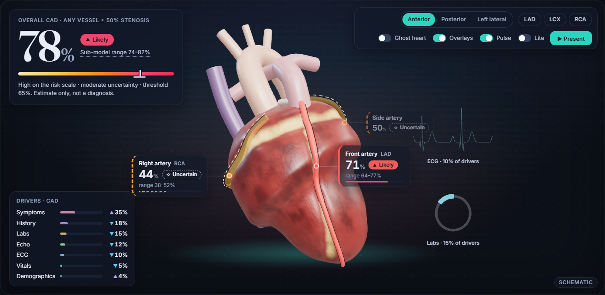
Dataset: Extension of Z-Alizadeh Sani (UCI id 411, DOI 10.24432/C5461K). 303 catheterized patients from one center, 59 columns, no missing values.
| Target | Definition | Positive |
|---|---|---|
| CAD | Overall coronary artery disease (Cath) | 71.3% |
| LAD | Left anterior descending ≥ 50% stenosis | 58.4% |
| LCX | Left circumflex ≥ 50% stenosis | 39.3% |
| RCA | Right coronary artery ≥ 50% stenosis | 37.6% |
Inputs: 51 features in 7 explanation groups: Demographics, History, Symptoms, Vitals, Labs, ECG and Echo. Excluded with reasons: the four label columns, Weight and Length (BMI is computed exactly from them), Obesity (equals BMI > 25) and Exertional CP (constant).
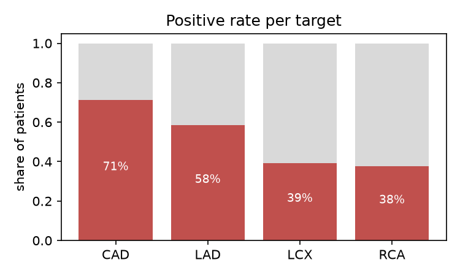
features.yaml holds each input's name, source column, encoding, group, valid and normal range, whether it is modifiable, and patient wording.
It generates the API's input validation, the form, the SHAP groups, the what-if sliders and the patient text. A new feature needs no code change, and a test proves it.
test_leakage.py fails if one reaches fit.| Target | Model | ROC-AUC (95% CI) | Brier | Threshold | Recall | Precision | F1 | Coverage | Uncertain |
|---|---|---|---|---|---|---|---|---|---|
| CAD | Logistic regression | 0.92 (0.91–0.93) | 0.104 | 0.65 | 0.85 | 0.92 | 0.89 | 90.5% | 11% |
| LAD | Random forest | 0.85 (0.83–0.87) | 0.158 | 0.50 | 0.85 | 0.79 | 0.82 | 90.6% | 35% |
| LCX | Random forest | 0.72 (0.70–0.75) | 0.206 | 0.29 | 0.86 | 0.50 | 0.63 | 90.5% | 58% |
| RCA | Logistic regression | 0.72 (0.69–0.74) | 0.204 | 0.28 | 0.85 | 0.48 | 0.62 | 90.7% | 55% |
LCX and RCA are harder to predict from routine data. Their learning curves still rise at the full training size, and these models say Uncertain for more patients by design rather than guessing.
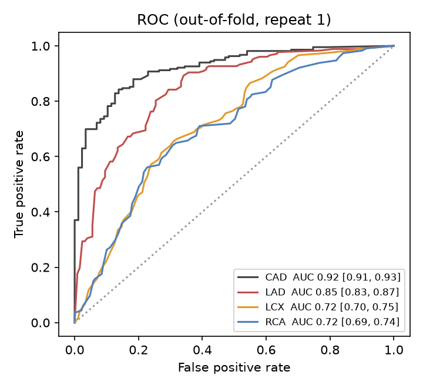
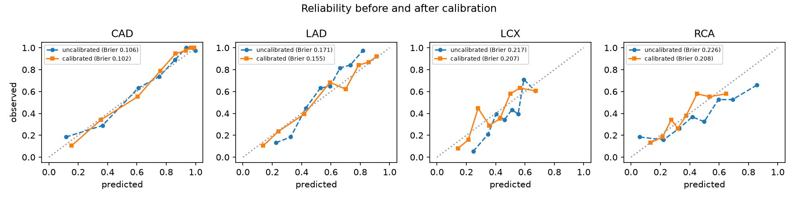
| Experiment | Result |
|---|---|
| Paired bootstrap, every family vs the selected one | No family is reliably better (every 95% CI of ΔAUC includes 0). |
| Soft-vote ensemble of all four families | AUC 0.923 / 0.850 / 0.719 / 0.732: no meaningful gain, so it was not adopted. |
| Classifier chain (overall CAD estimate as an input to the artery models, nested) | ΔAUC +0.006 / +0.001 / −0.007 (LAD/LCX/RCA), no reliable gain. |
| Ablation by measurement group | Symptoms help every model most (−0.03 to −0.07 AUC when removed); Echo matters for LAD (−0.037). |
| Engineered features (risk-factor count, ECG-abnormality count, LDL/HDL, interactions) | No reliable gain; reported, not used. |
| Input noise of 10% of each feature's spread | Mean |Δp| ≤ 0.03; 0% Likely↔Unlikely flips for all four models. |
| Decision curves | Net benefit above "treat all" and "treat none" across clinically used thresholds. |
| Subgroups (sex, age bands) | Reported in the app; groups too small to judge are marked. |
All of these are reproducible with python tasks.py experiments and appear in the app's Model-trust tab.
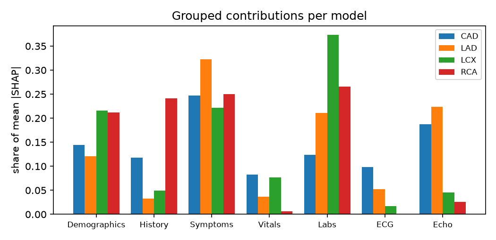
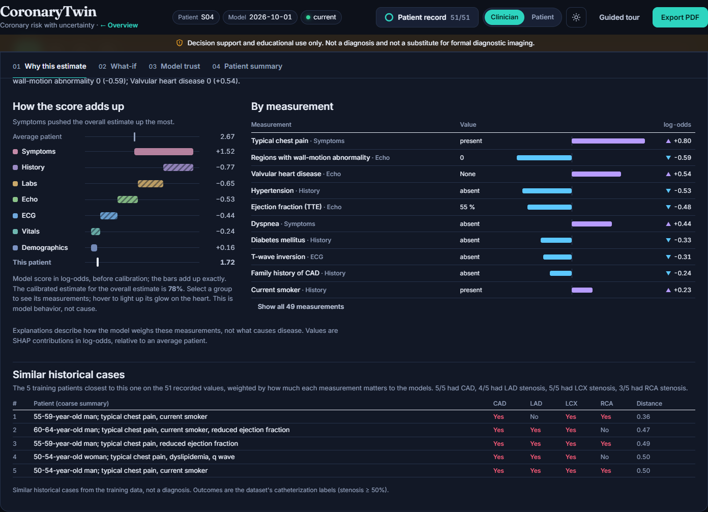
| Tool | What it does | Evidence |
|---|---|---|
| What-if | Moves modifiable values; arteries recolor live; the counterfactual finds the smallest change below the threshold. | Labeled model sensitivity, not advice. Explains when changes are small (strongest drivers not modifiable). |
| Next best test | For missing values, ranks the test that would change the estimate most, using values from similar patients. | Picked the single most informative test in 68% of 60 patients (chance 33%). |
| Similar cases | The 5 nearest training patients in a SHAP-weighted space, as coarse summaries with their outcomes. | No raw rows or row numbers are ever returned. |
| Out-of-distribution warning | Flags values beyond the training range and unusual combinations (Mahalanobis). | 1.3% false alarms on real patients; 100% of out-of-range synthetic patients flagged. |
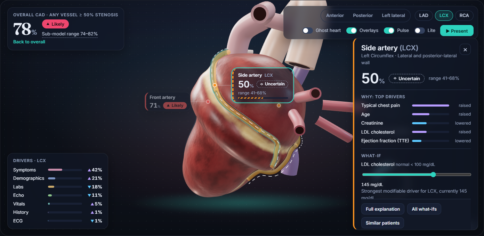
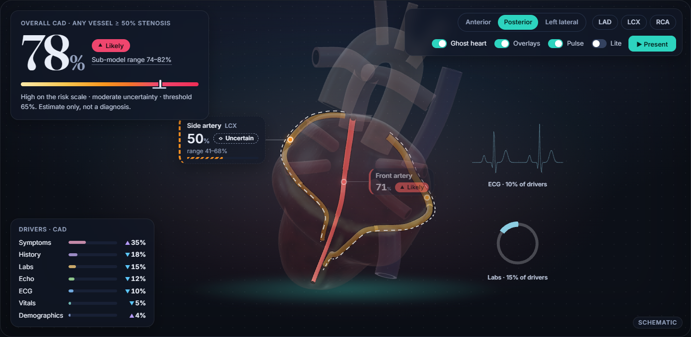
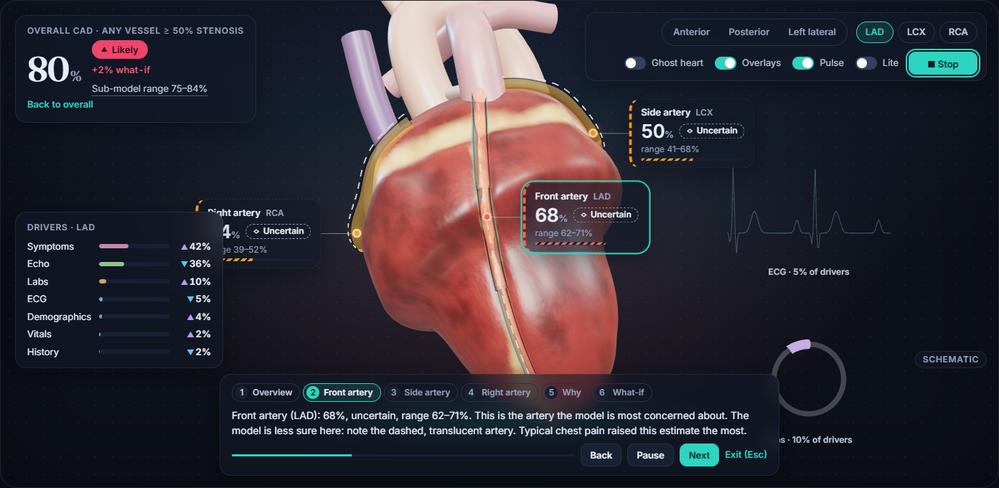
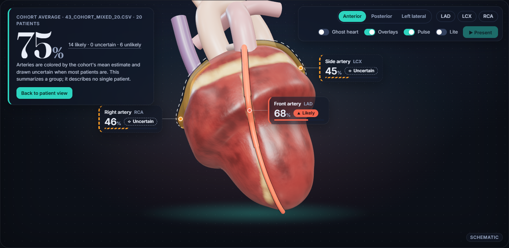
docker compose up --build → http://localhost:8080 (API docs at :8000/docs).python tasks.py setup, python tasks.py serve, python tasks.py web.csv/ (50 synthetic samples, single and cohort).data → train → explain → experiments; seeds are fixed, so numbers reproduce.features.yaml, registry.json, anatomy.json) are cross-checked; a new feature, model or artery is a registry edit.view_db.py).Data: Alizadehsani R., Roshanzamir M., Sani Z. (2013). Extension of Z-Alizadeh Sani dataset. UCI Machine Learning Repository, DOI 10.24432/C5461K. 3D: all geometry and textures procedural (no third-party assets). Libraries: scikit-learn, XGBoost, LightGBM, SHAP, LIME, FastAPI, React, three.js / React Three Fiber, under their open-source licenses.
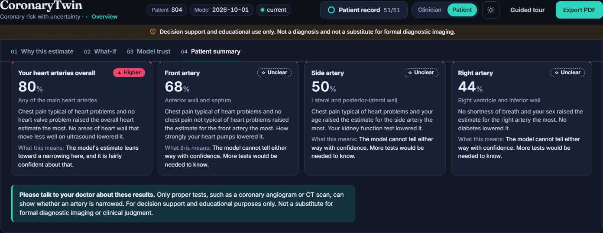